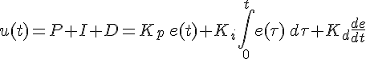
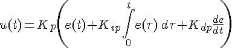
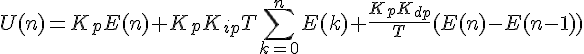
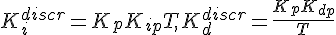
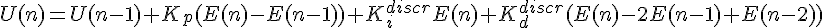
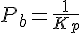
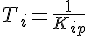
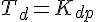

Пропорционально-интегрально-дифференцирующий (ПИД) регулятор — устройство в управляющем контуре с обратной связью. Используется в системах автоматического управления для формирования управляющего сигнала с целью получения необходимых точности и качества переходного процесса. ПИД-регулятор формирует управляющий сигнал, являющийся суммой трёх слагаемых, первое из которых пропорционально разности входного сигнала и сигнала обратной связи (сигнал рассогласования), второе — интеграл сигнала рассогласования, третье — производная сигнала рассогласования.
Если какие-то из составляющих не используются, то регулятор называют пропорционально-интегрирующим, пропорционально-дифференцирующим, пропорциональным и т. д.
Пропорциональная составляющая вырабатывает выходной сигнал, противодействующий отклонению регулируемой величины от заданного значения, наблюдаемому в данный момент времени. Он тем больше, чем больше это отклонение. Если входной сигнал равен заданному значению, то выходной равен нулю.
Однако при использовании только пропорционального регулятора значение регулируемой величины никогда не стабилизируется на заданном значении. Существует так называемая статическая ошибка, которая равна такому отклонению регулируемой величины, которое обеспечивает выходной сигнал, стабилизирующий выходную величину именно на этом значении. Например, в регуляторе температуры выходной сигнал (мощность нагревателя) постепенно уменьшается при приближении температуры к заданной, и система стабилизируется при мощности, равной тепловым потерям. Температура не может достичь заданного значения, так как в этом случае мощность нагревателя станет равна нулю, и он начнёт остывать.
Чем больше коэффициент пропорциональности между входным и выходным сигналом (коэффициент усиления), тем меньше статическая ошибка, однако при слишком большом коэффициенте усиления при наличии задержек (запаздывания) в системе могут начаться автоколебания, а при дальнейшем увеличении коэффициента система может потерять устойчивость.
Интегрирующая составляющая пропорциональна интегралу по времени от отклонения регулируемой величины. Её используют для устранения статической ошибки. Она позволяет регулятору со временем учесть статическую ошибку.
Если система не испытывает внешних возмущений, то через некоторое время регулируемая величина стабилизируется на заданном значении, сигнал пропорциональной составляющей будет равен нулю, а выходной сигнал будет полностью обеспечиваться интегрирующей составляющей. Тем не менее, интегрирующая составляющая также может приводить к автоколебаниям при неправильном выборе её коэффициента.
Дифференцирующая составляющая пропорциональна темпу изменения отклонения регулируемой величины и предназначена для противодействия отклонениям от целевого значения, которые прогнозируются в будущем. Отклонения могут быть вызваны внешними возмущениями или запаздыванием воздействия регулятора на систему.
Назначение ПИД-регулятора — в поддержании заданного значения x0 некоторой величины x с помощью изменения другой величины u. Значение x0 называется заданным значением (или уставкой, в технике), а разность e = (x0 − x) — невязкой (или ошибкой [регулирования], в технике), рассогласованием или отклонением величины от заданной. Приведённые ниже формулы справедливы в случае линейности и стационарности системы, что редко выполняется на практике.
Выходной сигнал регулятора u определяется тремя слагаемыми:

где Кp, Кi, Кd — коэффициенты усиления пропорциональной, интегрирующей и дифференцирующей составляющих регулятора соответственно.
Большинство методов настройки ПИД-регуляторов используют несколько иную формулу для выходного сигнала, в которой на пропорциональный коэффициент усиления умножены также интегрирующая и дифференцирующая составляющие:

В дискретной реализации метода расчета выходного сигнала уравнение принимает следующую форму:

где T — время дискретизации. Используя замену

можно записать:
В программной реализации для оптимизации расчетов переходят к рекуррентной формуле:

Часто в качестве параметров ПИД-регулятора используются:



Следует учитывать, что термины используются по-разному в различных источниках и разными производителями регуляторов.
Теоретические методы анализа системы с ПИД-регулятором редко применяются на практике. Основная сложность практического применения — незнание характеристик объекта управления. Кроме того, существенную проблему представляют нелинейность и нестационарность системы. Практические регуляторы работают в ограниченном сверху и снизу диапазоне, поэтому в принципе нелинейны. В этой связи получили распространение методы экспериментальной настройки регулятора, подключенного к объекту управления. Прямое использование формируемой алгоритмом управляющей величины также имеет свою специфику. Например, при регулировке температуры часто управляют не одним, а двумя устройствами, одно из них управляет подачей горячего теплоносителя для нагрева, а другое управляет хладагентом для охлаждения. Часто рассматриваются три варианта практических регуляторов. В первом варианте, наиболее близком к теоретическому описанию, выход регулятора — непрерывная аналоговая ограниченная величина. Во втором случае выход представляет собой поток импульсов, который может управлять шаговым двигателем. В третьем случае выходной управляющий сигнал регулятора используется для широтно-импульсной модуляции.
В современных системах автоматизации, которые, как правило, строятся на базе PLC ПИД-регуляторы реализуются либо как специализированные аппаратные модули, включаемые в состав управляющего контроллера, либо программными методами, с применением специализированных библиотек. Производители контроллеров часто разрабатывают специализированное ПО (тюнеры) для настройки коэффициентов регулятора.